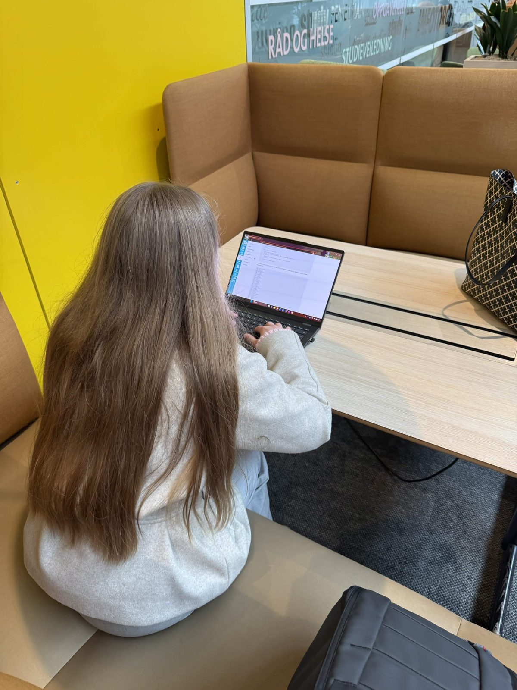

Studentøkonomi
Uka har 168 timer. Tolv av dem går til bussen
Studiene skal være en fulltidsjobb. For Emely (23), som pendler mellom Mysen og Halden, blir dagene lange, selv uten en deltidsjobb ved siden av.

Klokka 06.15 går bussen fra Mysen. Det er den eneste om morgenen.
– Det går én buss kl. 06.15 om morgenen fra Mysen, og jeg har ikke billappen. Neste buss går kl. 14.15. Derfor bruker jeg lang tid på pendling, forteller Emely.
Emely er 23 år og går første året på digitale medier og design ved Høgskolen i Østfold. Hun har ingen jobb ved siden av studiene og lever på støtten fra Lånekassen. Likevel blir uka full.
Hvor blir timene av?
Vi ba Emely anslå hvordan hun fordeler de 168 timene i en vanlig uke.
Emelys uke: 168 timer
- Søvnca. 52 t
- Fritid39 t
- Studier35+ t
- Pendlingca. 12 t
- Mat, trening, husarbeidresten
– Dette blir jo veldig forenklet, da. Men jeg vil si dette er gjennomsnittlig riktig, sier hun.
«Det skremte meg litt»
– Jeg fikk høre mye av både studenter og forelesere at man må regne med studiene som en fulltidsjobb, og det skremte meg litt, sier Emely.
Valget mellom jobb og studier gir henne mye grubling.
«Jeg føler at for mange så må det være enten eller; gode karakterer, eller god råd.»
Jobben spiser av studietiden
Mange studenter må få plass til begge deler. Rundt to av tre heltidsstudenter i Norge hadde betalt jobb ved siden av studiene i 2022. I snitt brukte de 33 timer i uka på studier og rundt 10 timer på betalt arbeid, viser tall fra den europeiske studentundersøkelsen Eurostudent, ifølge SSB.
SSB fant at studenter som jobber mellom 11 og 20 timer i uka, studerer rundt 2,5 timer mindre enn dem som ikke jobber. I Studentenes helse- og trivselsundersøkelse (SHoT) fra 2026 svarer over 40 prosent at jobben har gått ut over studiene.
For Emely handler det om mer enn penger.
– Det handler også om tid og overskudd, og jeg har sett mange av mine venninner knekke over balansen mellom studier og jobb, sier hun.
Les hele historien om Emelys økonomi i XL-saken «Studenter kan ikke ta taxi hver dag?»
Kilder
- Intervju med Emely (23), student ved Høgskolen i Østfold.
- SSB (2024): Mye jobb fører til mindre studietid, men ikke all jobb går på bekostning av studiene
- Norsk studentorganisasjon (2026): Et steg i riktig retning, men ikke i mål (SHoT 2026)